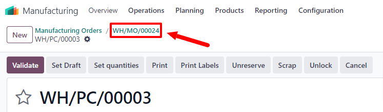
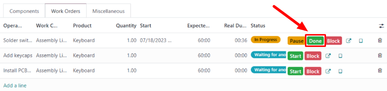

Fabricación en tres pasos¶
La aplicación Fabricación permite que los usuarios fabriquen productos en tan solo uno, dos o tres pasos. Si utiliza la fabricación en tres pasos, Odoo crea un traslado de componentes seleccionados, una orden de fabricación y un traslado de productos terminados almacenados, a su vez actualiza el inventario según el número de componentes eliminados y productos terminados creados.
Truco
El número de pasos utilizados en la fabricación se establece a nivel de almacén, esto permite que cada almacén utilice un número diferente de pasos. Si desea cambiar el número de pasos utilizado para un almacén específico, vaya a y seleccione un almacén de la pantalla Almacenes.
En la pestaña configuración del almacén, vaya al campo de entrada guilabel:Fabricación y seleccione una de las tres opciones: Fabricación (1 paso), Elegir componentes y luego fabricar (2 pasos), o Elegir componentes, fabricar y luego almacenar los productos (3 pasos).

Importante
Debe configurar los productos correctamente antes de fabricarlos. Si desea obtener más información sobre cómo hacerlo, consulte la documentación sobre cómo configurar un producto para la fabricación.
Crear una orden de fabricación¶
Si desea fabricar un producto en la aplicación de Odoo Fabricación, vaya a , y haga clic en Nuevo para crear una nueva |orden de fabricación|.
En la nueva orden de fabricación, seleccione el producto a producir del menú desplegable producto. El campo lista de materiales se autocompletará con la lista de materiales asociada.
Si tiene un producto con más de una |lista de materiales| configurada, puede seleccionar la |lista de materiales| específica en el campo lista de materiales, y el campo producto se completa automáticamente con el producto asociado.
Después de haber seleccionado una |lista de materiales|, las pestañas componentes y órdenes de trabajo se completan de forma automática con los componentes y operaciones especificados en la |lista de materiales|. Si necesita agregar componentes u operaciones a la |lista de materiales| que esté configurando, hágalo en las pestañas componentes y órdenes de trabajo mediante el botón agregar una línea.
Por último, confirme la lista de materiales.
Proceso de traslado de componentes de recolección¶
Una vez que confirme una orden de fabricación de tres pasos aparecerá un botón inteligente llamado traslados en la parte superior de la página. Haga clic en él para ir a la página Traslados de la orden de fabricación. La página muestra dos tipos de traslados: WH/PC/XXXXX (el traslado de componentes de recolección) y WH/SFP/XXXXX (el traslado de productos terminados almacenados).
Seleccione WH/PC/XXXXX para abrir el traslado de componentes de recolección para la orden de fabricación. Este traslado se utiliza para rastrear el movimiento de componentes desde las ubicaciones donde se almacenan hasta la ubicación donde se utilizan para fabricar el producto.
Después de trasladar los componentes fuera de su ubicación de almacenamiento, haga clic en Validar en la parte superior del traslado, luego presione Aplicar en la ventana emergente Traslado inmediato que aparece. Al hacerlo, se marca el traslado como hecho y se actualiza el inventario de forma que refleje la cantidad de componentes trasladados.
Por último, regrese a la orden de fabricación mediante el enlace WH/MO/XXXXX en la parte superior de la página.
Proceso de orden de fabricación¶
Una orden de fabricación se procesa al completar todas las órdenes de trabajo enumeradas en la pestaña órdenes de trabajo. Esto se puede hacer desde la orden de fabricación o desde la vista de la tableta de órdenes de trabajo.
Flujo básico¶
Si desea completar las órdenes de trabajo desde la orden de fabricación vaya a , y seleccione una orden de fabricación.
En la página de orden de fabricación, seleccione la pestaña órdenes de trabajo. Una vez que comience el trabajo en la primera orden de trabajo que debe completarse, haga clic en el botón iniciar para esa orden de trabajo. La aplicación Fabricación iniciará un temporizador que registra cuánto tiempo lleva completar la orden de trabajo.

Cuando se complete la orden de trabajo, haga clic en el botón Hecho para esa orden de trabajo. Repita el mismo proceso para cada orden de trabajo enumerada en la pestaña órdenes de trabajo.
Una vez que completó todas las órdenes de trabajo, haga clic en producir todo en la parte superior de la pantalla para marcar la orden de fabricación como hecha y registrar los producto fabricado en inventario.
Flujo en vista de tableta¶
Si desea completar las órdenes de trabajo para una orden de fabricación mediante la vista de tableta, vaya a , y seleccione una orden de fabricación.
Ahora haga clic en la pestaña órdenes de trabajo y seleccione el botón 📱 (tableta) en la línea de la primera orden de trabajo que se vaya a procesar. Esto abrirá la vista de la tableta.

Una vez que abra la vista de la tableta, la aplicación Fabricación iniciará automáticamente un temporizador que lleva un registro de cuánto tiempo falta para completar la orden de trabajo. Después de completar la orden de trabajo, haga clic en el botón marcar como hecho en la esquina superior derecha de la vista de la tableta.
Si hace clic en Marcar como hecho con al menos una orden de trabajo por completar, se abrirá una página que lista la siguiente orden de trabajo. Haga clic en esa orden de trabajo para abrirla en la vista de tableta.
Una vez que termine la orden de trabajo final para la orden de fabricación, aparecerá un botón Marcar como hecho y cerrar orden de fabricación en la vista de la tableta además del botón Marcar como Hecho. Haga clic en Marcar como hecho y cerrar orden de fabricación para marcar la orden de fabricación como hecha y registrar los productos fabricados en el inventario.
También puede completar la orden de trabajo final con la orden de fabricación abierta, solo debe hacer clic en marcar como hecho. En este caso, la orden de fabricación se puede cerrar más adelante mediante el botón Producir todo de la orden de fabricación.
Proceso de traslado de productos terminados¶
Después de completar la orden de fabricación, regrese a la página de traslados de la orden haciendo clic en el botón traslados en la parte superior de la orden. Esta vez, seleccione WH/SFP/XXXXX para abrir el traslado de productos terminados de la tienda. Este traslado se utiliza para rastrear el movimiento de los productos terminados desde el lugar donde se fabricaron hasta el lugar donde se almacenan.
Después de trasladar los productos terminados fuera de su ubicación de almacenamiento, haga clic en validar en la parte superior del traslado, luego presione aplicar en la ventana emergente Traslado inmediato que aparece. Al hacerlo, se marca el traslado como hecho y se actualiza el inventario de forma que refleje la cantidad de productos terminados trasladados.